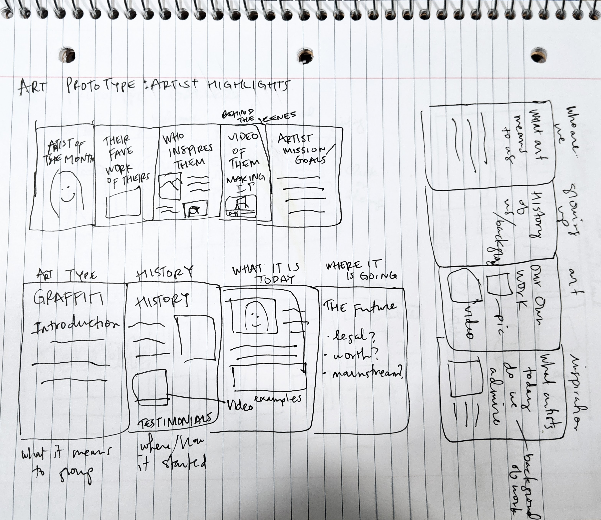
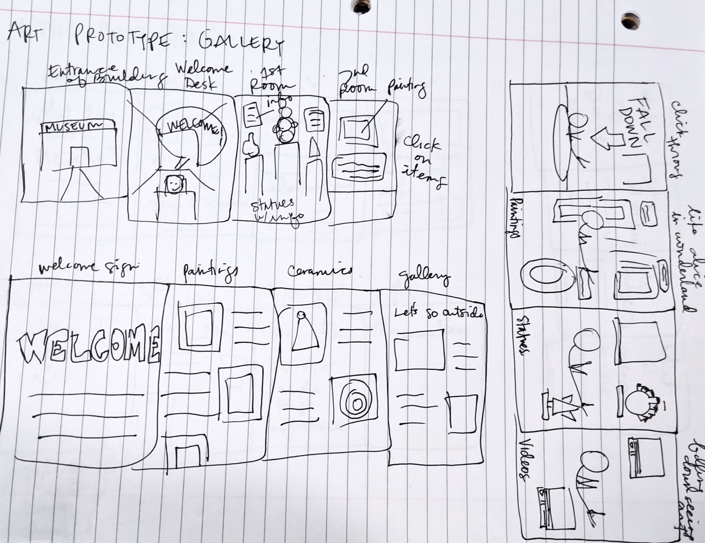
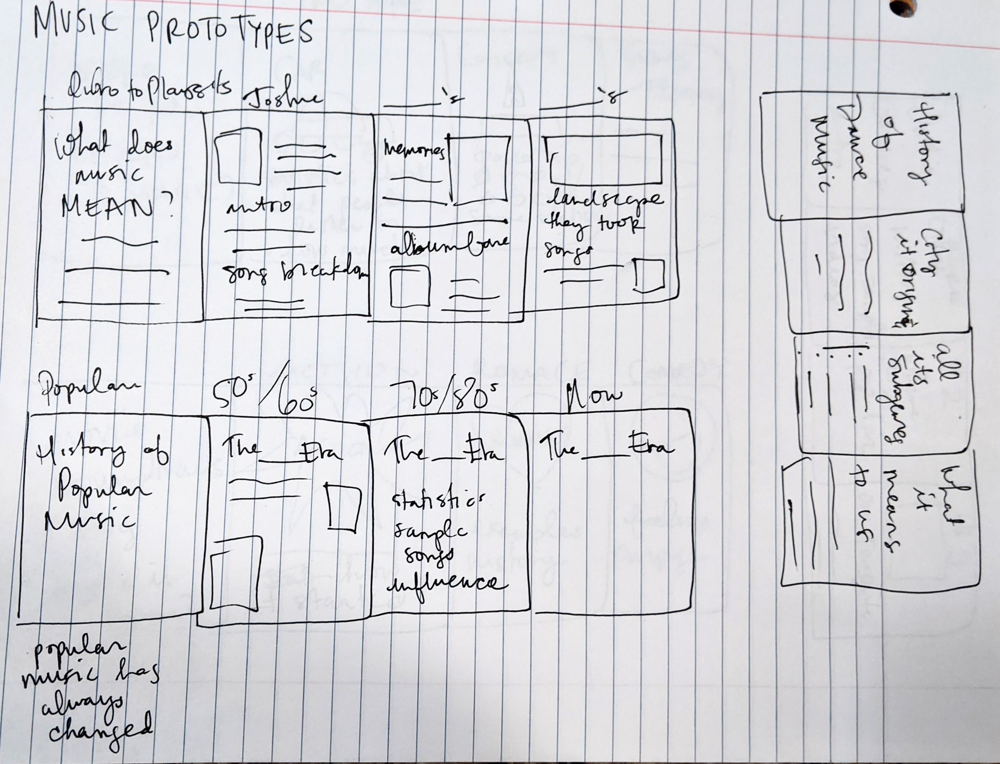
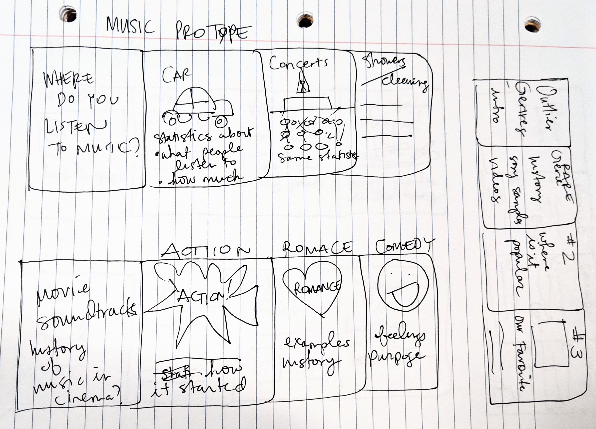
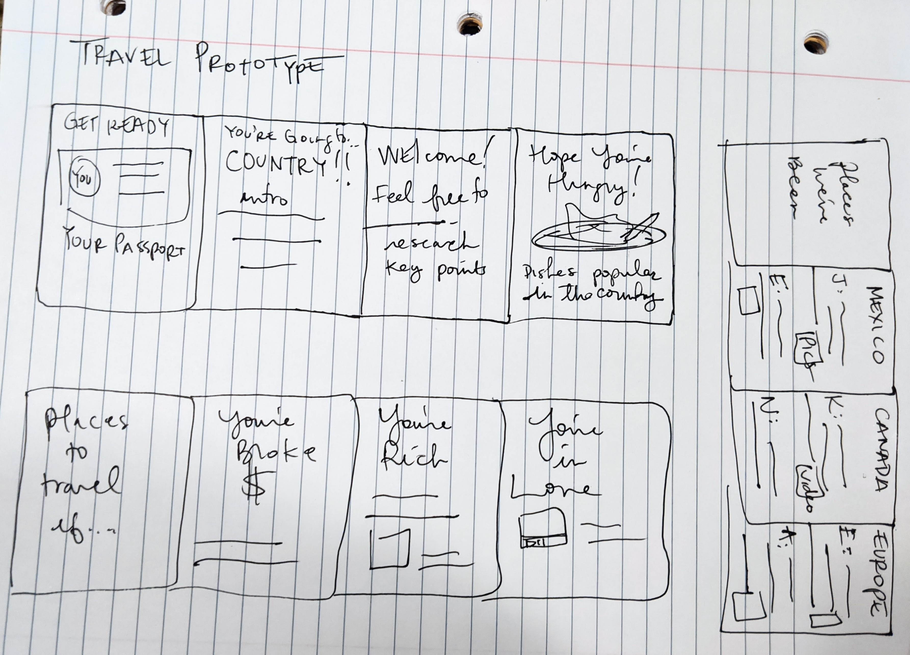

<!DOCTYPE html>
<html lang="en">
<head>
  <nav class="navbar navbar-expand-lg navbar-dark bg-primary">
      <button class="navbar-toggler" type="button" data-toggle="collapse" data-target="#navbarSupportedContent" aria-controls="navbarSupportedContent" aria-expanded="false" aria-label="toggle navigation">
        <span class="navbar-toggler-icon"></span>
      </button>

      <div class="collapse navbar-collapse" id="navbarSupportedContent">
        <ul class="navbar-nav mr-auto">
          <li class="nav-item active">
            <a class="nav-link" href="../index.html"><font style="vertical-align: inherit;"><font style="vertical-align: inherit;">HOME</font></font><span class="sr-only"><font style="vertical-align: inherit;"><font style="vertical-align: inherit;">(Current)</font></font></span></a>
          </li>
          <li class="nav-item">
            <a class="nav-link" href="css/index.css"><font style="vertical-align: inherit;"><font style="vertical-align: inherit;">CSS Code</font></font></a>
          </li>
      </div>
    </nav>
  <div class="container">
  <meta charset="utf-8">
      <!-- Required meta tags -->
      <meta charset="utf-8">
      <meta name="viewport" content="width=device-width, initial-scale=1, shrink-to-fit=no">
      <!-- Bootstrap CSS -->
      <link rel="stylesheet" href="https://stackpath.bootstrapcdn.com/bootstrap/4.3.1/css/bootstrap.min.css" integrity="sha384-ggOyR0iXCbMQv3Xipma34MD+dH/1fQ784/j6cY/iJTQUOhcWr7x9JvoRxT2MZw1T" crossorigin="anonymous">
      <link rel="stylesheet" type="text/css" href="css/index.css">
    </head>
    <body>
      <!-- Optional JavaScript -->
      <!-- jQuery first, then Popper.js, then Bootstrap JS -->
      <script src="https://code.jquery.com/jquery-3.3.1.slim.min.js" integrity="sha384-q8i/X+965DzO0rT7abK41JStQIAqVgRVzpbzo5smXKp4YfRvH+8abtTE1Pi6jizo" crossorigin="anonymous"></script>
      <script src="https://cdnjs.cloudflare.com/ajax/libs/popper.js/1.14.7/umd/popper.min.js" integrity="sha384-UO2eT0CpHqdSJQ6hJty5KVphtPhzWj9WO1clHTMGa3JDZwrnQq4sF86dIHNDz0W1" crossorigin="anonymous"></script>
      <script src="https://stackpath.bootstrapcdn.com/bootstrap/4.3.1/js/bootstrap.min.js" integrity="sha384-JjSmVgyd0p3pXB1rRibZUAYoIIy6OrQ6VrjIEaFf/nJGzIxFDsf4x0xIM+B07jRM" crossorigin="anonymous"></script>
    </body>
  </html>
</div>
    <div class="container">
      <div class="col-sm-12">
  <h1>Lab 20: Team Project Sketches</h1>
      
      
      
      
      </div>
<div class="container">
    <div class="row">
      <div class="col-sm-9">
        <h2>Lab Purpose</h2>
        <p>The purpose of this lab was to sketch different ideas about the
          group website we are making. We were supposed to sketch at least 15 different sketches showing
          different web pages and how they look and what information it would cover. </p>
         <h2>Challenges</h2>
         <p>It was a bit difficult to let the ideas flow firstly, and then to not spend so much time on one secondly.
          The prompt said sketches should be about 2-3 minutes each and so I set a timer for each one. This really helped
          to let ideas flow and not become too attached or secondguess things.</p>
         <h2>Results</h2>
          <p>I really liked this process and trying to sketch things out quickly without second guessing myself.
          I think I sketched out some good ideas that we could actually do if the group agrees to. </p></div>
</div>
</main>
